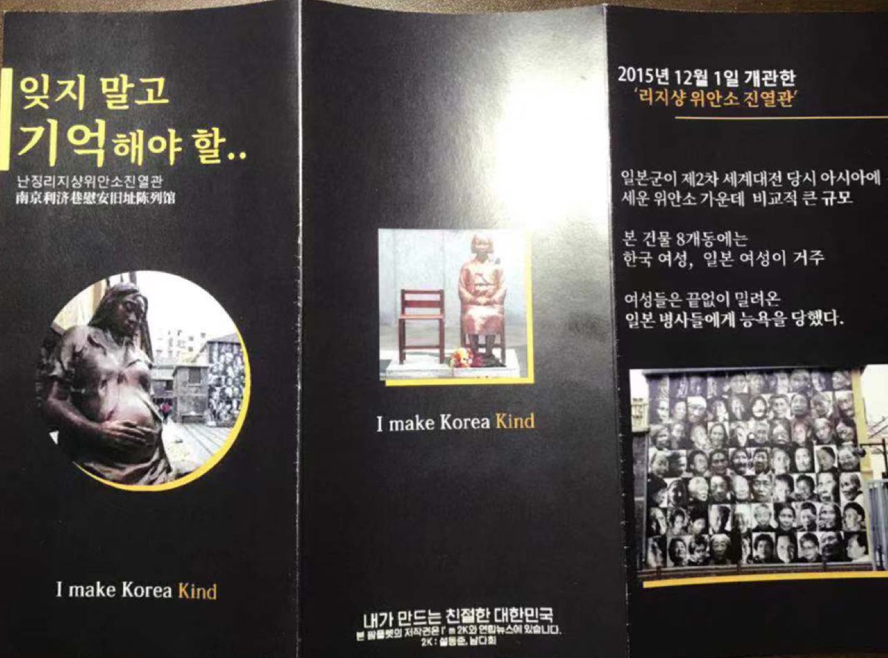

중국을 비롯해 해외 곳곳에는 국내 못지않게 많은 독립운동의 흔적들이 남아있다. 그리고 그 곳으로의 한국인들의 꾸준한 발걸음은 여러 유적지가 옛 모습을 간직하게 하는 원동력이 된다. 그러나 해외 유적지인 경우, 그 나라의 언어나 영어로만 설명이 적혀있는 경우가 많다. 이 때문에 한국인들이 직접 현장을 찾더라도 언어의 장벽에 막히거나, 정확하지 못한 설명 때문에 유적지의 의미를 충분히 이해하지 못하고 돌아오는 일이 빈번하게 일어나고 있다.
이런 아쉬움이 반복되는 가운데, 타국으로 교환학생을 떠난 두 청년이 정부도 못한 일을 해냈다. ‘I make Korea Kind’(내가 만드는 친절한 대한민국) 프로젝트의 참여자인 설동준 씨(23·경희대 언론정보학과)와 남다희 씨(22·경희대 중국어학과)가 그 주인공이다. 이들은 지난 9월과 10월, 두 달 간 난징 위안소 유적 진열관에 직접 만든 한국어 팸플릿 300부를 기증하는 프로젝트를 진행했다.
설동준 씨는 ‘I make Korea Kind’ 프로젝트의 첫 시작으로, 지난 겨울 중국 여행 때 방문한 리지샹 위안소 진열관을 떠올렸다. 조선인 ‘위안부’ 할머니 150명 이상이 이곳에 계셨다는 점에서 우리나라의 많은 국민들이 기억하고 찾아오는 공간이지만, 그 중요성에 비해 한국어 설명이 부실하다는 것을 느꼈기 때문이다. 박물관을 설명하는 팜플렛이 존재하기는 했으나 관람객들이 가져갈 수 있도록 비치되지 않은 상태였고, 그나마 배포되던 팜플렛의 1/3 크기인 전단지는 박물관의 개괄적인 소개, 의미 등을 담고 있을 뿐 정보 전달에 있어서 미흡했다. 박물관 내의 한국어 설명도 구역별로 첫 번째 안내판의 개괄적인 개요 정도에서만 찾을 수 있었다. 특히 그는 “진열관 개관에 힘썼던 조선의 박영심 할머니, 이용수 할머니에 대한 설명 역시 영어와 중국어로 기재해 국적과 피해상황을 알아보기 힘들다는 점에서 안타까움을 느꼈다”고 말했다. 따라서 그는 프로젝트와 관련해 사전에 생각하고 있던 여러 장소 중, 난징 위안소 진열관을 최우선으로 진행하기로 결정했다.
이들의 팸플릿은 한국인 관광객을 대상으로 제작되었으며, 다양한 사진과 함께 박물관 내에 전시된 유물에 대한 설명까지 포함하고 있다. 또한 기존 전단지가 어려운 문장을 쓴다거나, 띄어쓰기나 맞춤법 등에서 오류를 보였던 것을 개선해 관광객들의 이해를 도왔다. 팸플릿의 한 면에는 박영심 할머니에 대한 내용을 담기도 하였다.
팸플릿을 만들고 배포하는 과정이 순탄치만은 않았다. 공공 기관에 소속되어있지 않은 대학생의 신분으로, 다른 나라의 국가 기관을 상대하는 일이었기 때문이다. 설동준 씨는 “초반 설득 과정에서 많은 검증을 거쳐야 했다. 이런 일을 하려는 의도, 목적, 동기를 상세히 설명해야 했다. 경제적으로도 사비와 장학금을 털어 진행했기 때문에 분명히 한계가 있었다”라고 그간의 고충을 털어 놓았다. 야심차게 시작한 일이었지만, 책으로만 중국어를 배웠던 그에겐 전문적인 의사소통이 결코 쉽지만은 않았다. 이 과정에서 비교적 중국어를 수월하게 구사하는 남다희 씨를 섭외해, 관리자와의 소통에서 많은 도움을 받으며 협업해나가기도 했다. 결과적으로는 진열관 측에서도 ‘관심과 애정에 고맙다’며 두 학생에게 위안부 관련 책을 선물해주기도 하고 ‘한국의 관심이 많이 모이길 바란다’며 호응했다.

> 설동준, 남다희씨가 직접 제작한 난징 리지샹 위안소 유적 진열관 안내 팸플릿. 리지샹 위안소 진열관과 내부 전시물에 대한 한국어 설명을 포함하고 있으며, 중국어판 팸플릿도 함께 제작했다.
두 청년은 중국 정부 관리 하에서 운영되고 있는 다른 한국 관련 독립운동 유적들을 한국어로 소개하는 일에 대해서도 관심을 갖고 있다. “거대한 중국 땅에 한국을 더 진하게 새기고 싶다”라는 목표를 이루어 나가는 과정인 것이다. 쑨원(孫文)이 세운 황포군관학교는 의열단의 김원봉, 권준 등을 비롯한 많은 독립운동가들이 교육받은 곳으로, 이후 우리나라 항일무장독립단체 창설의 기반이 되었다. 두 청년은 이에 대해 현재 광저우 황포군관학교가 소속된 광둥혁명역사박물관 홍보팀과 연락하며 팸플릿 기증을 논의하고 있다. 미리 제작한 시안을 번역판과 함께 보내, 해당 시설의 답변을 기다리고 있는 상태이다. 광저우의 대한민국 임시정부 청사건물은 ‘동산백원’이라고 백범일지에 기록된 곳으로 현재는 주민 거주지로서 쓰이고 있다. “광둥 지역도 만주나 동북지방 못지않게 항일운동을 위해 힘썼다는 것을 증명하는 시설이기에 꼭 개선이 필요하다고 생각한다”고 밝힌 이들은 안내판 세우는 일 등과 관련해 총영사관 쪽에 연락하는 등의 노력을 계속하고 있다.
이들이 생각하는 팸플릿 기증의 의미는 무엇일까? 설씨는 “팸플릿은 그저 시설을 설명하는 도구를 넘어 오늘의 한국인들이 얼마나 아픈 역사를 되새기고 있는지, 얼마나 역사에 대한 애정이 있는지를 보여줄 수 있는 바로미터라고 생각한다”고 말했다. 남다희 씨는 “민간 주체의 노력은 역사적 유적지를 보존하고 그 장소에 가치를 부여하는 데 큰 영향을 미친다. 프로젝트와 매체를 통해서 팸플릿이 전달 되면서 많은 사람들이 난징 위안소의 존재를 알 수 있었다”고 프로젝트의 의의를 밝혔다.
난징 리지샹 위안소는 아시아에서 가장 규모가 컸던 일본군 위안소로서, 이외에도 난징에는 40개의 위안소가 더 존재했다고 알려져 있다. 리지샹 위안소에는 조선과 중국을 비롯한 아시아인과 심지어 인도네시아에 거주한 네덜란드 여성까지 ‘위안부’로 끌려왔다. 이 중 2호 건물인 동운(東雲) 위안소는 조선인 ‘위안부’들이 생활했던 곳이다. 3년 동안 이 곳의 19호 방을 썼던 박영심 할머니(1922~2006)는 2003년에 현장을 찾아 이곳이 위안소임을 증언하기도 하였다. 난징 리지샹 위안소 유적 진열관은 당시의 8개 위안소 건물 중 6개를 보수해, 2015년 12월 1일 난징대학살기념관의 분관으로서 문을 열었다.